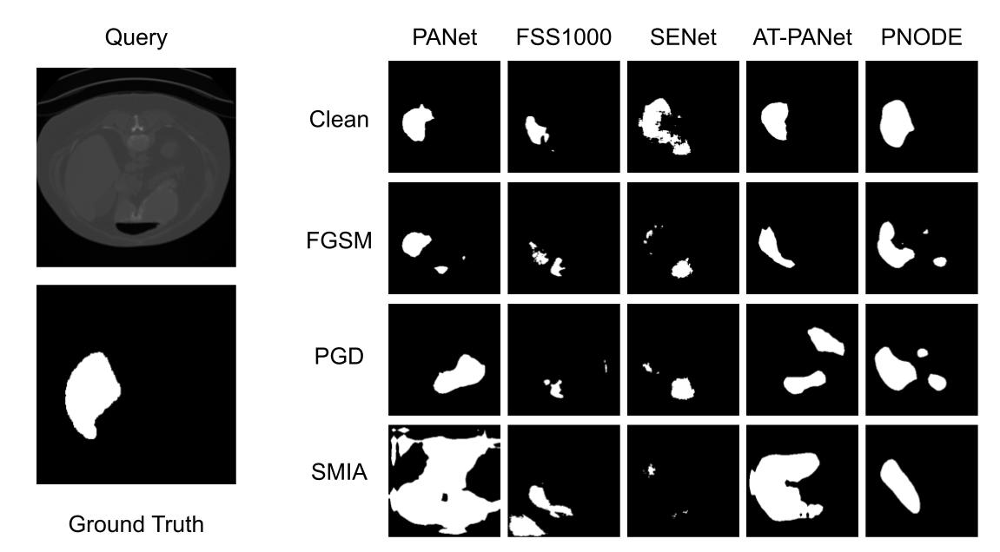

Adversarially Robust Prototypical Few-shot Segmentation with Neural-ODEs
|  |
Abstract
Few-shot Learning (FSL) methods are being adopted in settings where data is not abundantly available. This is especially seen in medical domains where the annotations are expensive to obtain. Deep Neural Networks have been shown to be vulnerable to adversarial attacks. This is even more severe in the case of FSL due to the lack of a large number of training examples. In this paper, we provide a framework to make few-shot segmentation models adversarially robust in the medical domain where such attacks can severely impact the decisions made by clinicians who use them. We propose a novel robust few-shot segmentation framework, Prototypical Neural Ordinary Differential Equation (PNODE), that provides defense against gradient-based adversarial attacks. We show that our framework is more robust compared to traditional adversarial defense mechanisms such as adversarial training. Adversarial training involves increased training time and shows robustness to limited types of attacks depending on the type of adversarial examples seen during training. Our proposed framework generalises well to common adversarial attacks like FGSM, PGD and SMIA while having the model parameters comparable to the existing few-shot segmentation models. We show the effectiveness of our proposed approach on three publicly available multi-organ segmentation datasets in both in-domain and cross-domain settings by attacking the support and query sets without the need for ad-hoc adversarial training.